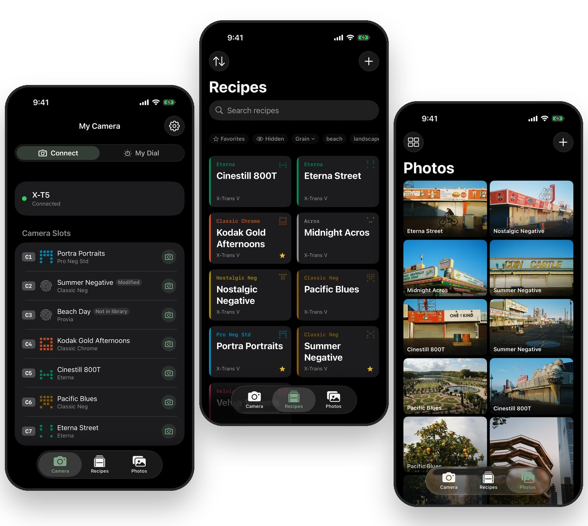
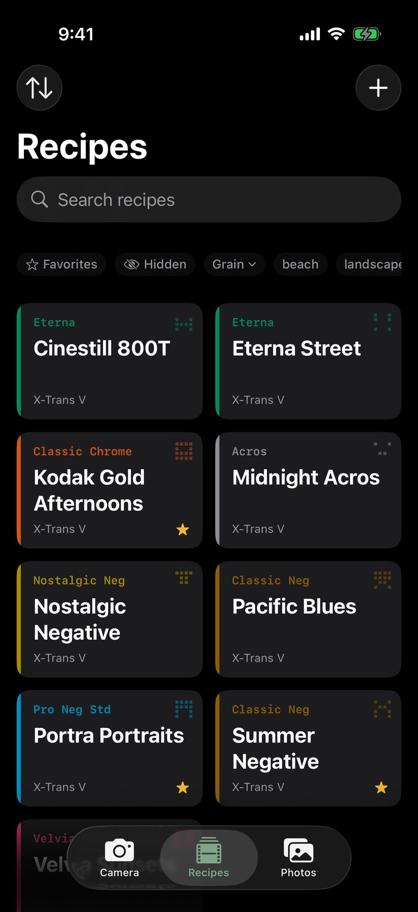
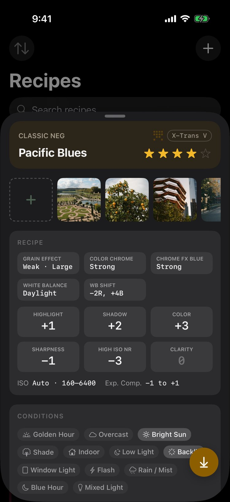
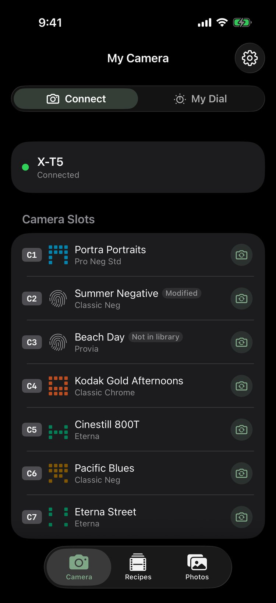

InkFrame
An iPhone app for organizing and reviewing your Fujifilm film simulation recipes, and sending them to your camera.
InkFrame is a personal project, built with a lot of AI help and shared as it is. The vision for this app is guided by me and the code is lightly reviewed. This app is early and narrowly tested. So far it has only been used with an iPhone 17 Pro and a Fujifilm X-E5, so other iPhones and cameras may behave differently.
Get InkFrame Beta The TestFlight beta isn't open yet.
Know every recipe
InkFrame fingerprints each recipe and visually represents it with an identicon. The fingerprint identifies one exact combination of settings, so the same recipe always looks the same, everywhere.
Once a recipe has its fingerprint, add notes, favorite it or hide it. Attach reference photos to see how pictures actually look with it.


Stop memorizing settings
InkFrame knows the settings, the image quality and everything else a recipe needs. Pick a recipe and sideload it to a camera slot in a few taps.
Connect your camera over USB-C and set its USB mode to USB TETHER SHOOTING FIXED.
